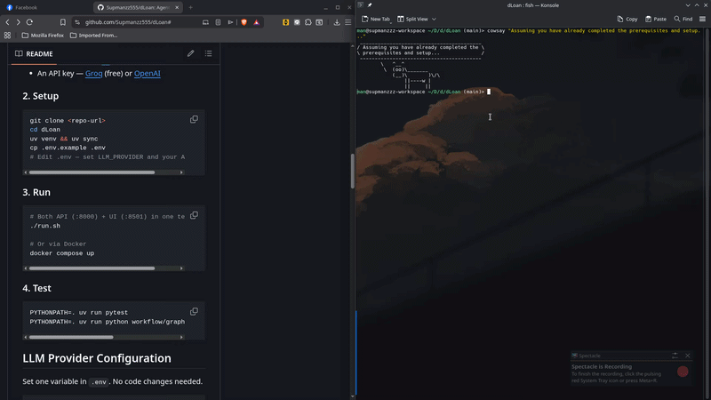
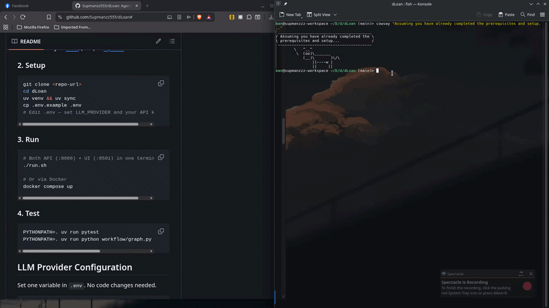

Demo & Presentation
Demo Script
Setup
- Ensure the API is running:
docker compose upor./run.sh - Open Streamlit UI at http://localhost:8501
- Have the list of applicants ready (APP001–APP020)
1. Introduction (1 minute)
Explain the business problem: - dLoan receives many applications daily - Manual screening is slow, inconsistent, and repetitive - The AI system assists credit officers by automating validation, eligibility checks, and risk assessment - The final decision always rests with a human
2. Happy Path — Proceed (2 minutes)
- Select APP001 (Somchai) from the dropdown
- Point out: all fields fill automatically, all docs present, stable employee
- Click "Screen Applicant"
- Show the results:
- ✅ Recommendation: Proceed — green indicator
- Confidence: High
- Eligibility status: Eligible
- DTI ratio: 34.29% — well below threshold
- Risk flags: none
- Explanation — clear reasoning
- Next action — what the officer should do
- Disclaimer — "Requires human review" at the end
- Key takeaway: clean applicant → instant proceed recommendation
3. Missing Documents — Need More Info (2 minutes)
- Select APP003 (Nattapong) from the dropdown
- Point out: missing salary_slip
- Click "Screen Applicant"
- Show the results:
- 🟡 Recommendation: Need More Info — yellow indicator
- Missing documents: salary_slip
- Process is fast — pipeline short-circuits at Document Agent
- Key takeaway: missing data is caught early, no wasted processing
4. Hard Rule Violation — Reject / Not Eligible (2 minutes)
- Select APP005 (Malee) from the dropdown
- Point out: documents are present, but income is 15,000 THB (below 20K minimum)
- Click "Screen Applicant"
- Show the results:
- 🔴 Recommendation: Reject / Not Eligible — red indicator
- Eligibility status: Income below minimum threshold
- Pipeline ran through all 6 agents, but recommendation correctly rejected
- Key takeaway: hard rules are enforced regardless of other factors
5. Risk Flag — High Risk Review (2 minutes)
- Select APP007 (Thana) from the dropdown
- Point out: DTI is 70% (well above 60% threshold)
- Click "Screen Applicant"
- Show the results:
- 🟠 Recommendation: High Risk Review — orange indicator
- Risk flags: ["Debt-to-income ratio exceeds threshold"]
- Next action: send to senior officer for manual review
- Key takeaway: borderline applicants are flagged for human judgment, not auto-rejected
6. API Demo (2 minutes)
Open a terminal, send a curl request:
curl -X POST http://localhost:8000/screen \
-H "Content-Type: application/json" \
-d '{
"applicant_id": "API-DEMO",
"name": "Demo User",
"age": 35,
"employment_type": "employee",
"monthly_income": 45000,
"monthly_debt": 15000,
"requested_loan_amount": 200000,
"credit_history": "normal",
"uploaded_documents": ["id_card", "salary_slip", "bank_statement"]
}'
- Show the structured JSON response with all 9 fields
- Key takeaway: easy to integrate with other systems via REST API
7. Edge Cases — Quick Walkthrough (2 minutes)
| Scenario | Applicant | Expected Outcome |
|---|---|---|
| Senior employee, high income | APP002 | Proceed |
| Missing multiple documents | APP004 | Need More Info |
| Age exceeds 60 | APP006 | Reject / Not Eligible |
| Severe default on record | APP008 | High Risk Review |
| Self-employed, stable | APP009 | Proceed |
| Business owner, high income | APP010 | Proceed |
| Borderline DTI | APP011 | High Risk Review |
| Underage applicant | APP012 | Reject / Not Eligible |
| Invalid employment | APP013 | Reject / Not Eligible |
| DTI at threshold | APP014 | Proceed |
| Default + high DTI | APP015 | High Risk Review |
8. Integration Test (1 minute)
Run the full test suite:
PYTHONPATH=. uv run pytest
- Shows 20/20 test cases passing
- Demonstrates that the system is regression-free
9. Docker Demo (optional, 1 minute)
- Show the
docker compose upcommand - Note: API on :8000, UI on :8501
- Docker Compose Override enables hot-reload in development
10. Closing (1 minute)
What the system demonstrates: - ✅ 6-agent AI pipeline with LangGraph orchestration - ✅ 4 classification outcomes matching business rules - ✅ Post-LLM validation preventing hallucinations - ✅ Clean FastAPI + Streamlit architecture - ✅ Docker-ready deployment - ✅ Safety-first design with human review required
Limitations to acknowledge: - Synthetic data only — no real banking integration - Sequential processing (~20s per applicant) - Thai response language is basic (dropdown values stay English) - No user authentication in current build
Architecture Summary for Stakeholders
Why an Agentic Approach?
Instead of a single monolithic LLM prompt, the system uses 6 specialized agents, each handling one part of the screening process:
| Agent | What it does | Why separate? |
|---|---|---|
| Intake | Checks fields are present | Focus scope, reduce errors |
| Document | Verifies required docs uploaded | Specialized for document rules |
| Eligibility | Applies hard loan rules | Rule logic, deterministic |
| Risk | Detects risk signals | Needs judgment, not just rules |
| Recommendation | Classifies into 4 outcomes | Needs full context awareness |
| Explanation | Generates officer-facing text | Different output format (narrative) |
This separation makes the system: - Debugable — Each agent's output can be inspected independently - Maintainable — Update one prompt without affecting others - Safe — Short-circuit on intake/doc failure saves 4 LLM calls - Auditable — Full per-agent trace for every screening
Safety by Design
The system has three built-in safety mechanisms:
- Post-LLM rule validation — Python code overrides the LLM on hard facts
- Human review disclaimer — Every output requires officer verification
- No protected attributes — Schema excludes gender, religion, race, etc.
Demo GIFs
| Run with Docker | Run with script |
|---|---|
 |
 |